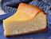

There's no doubt cheesecake is a classic, and there's nothing any more classic than the New York style cheesecake! Easy to make and delicious, There's enough to share with everyone, or enough only to yourself (we don't blame you). This New York style cheesecake by Chantal is a delectable choice of dessert to end the day!